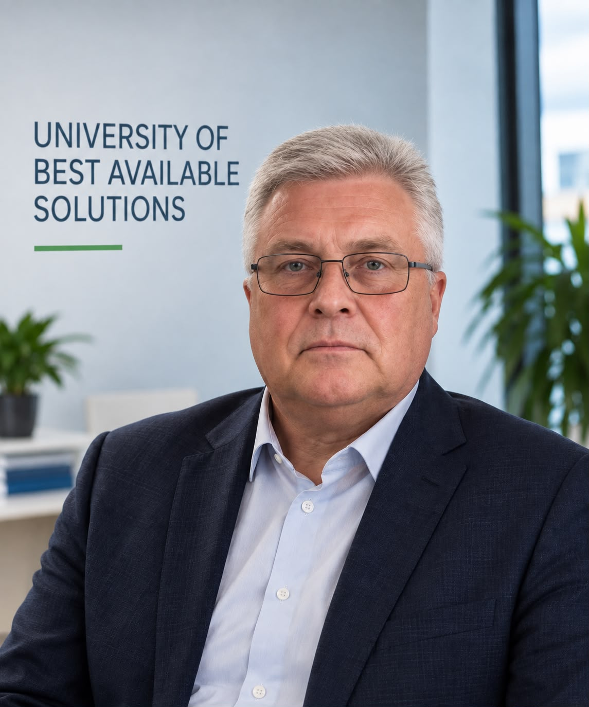
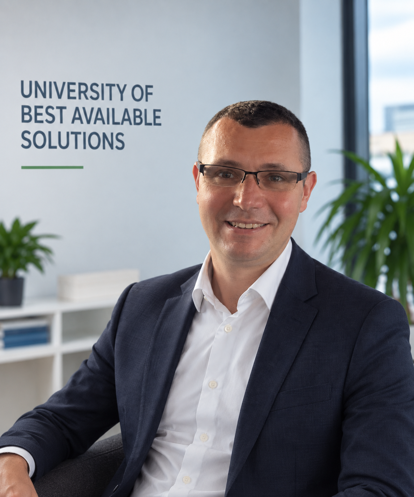
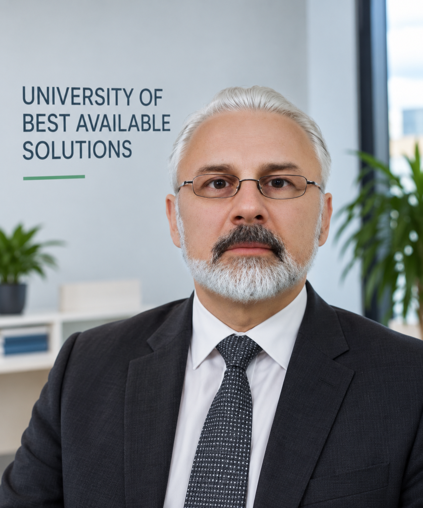
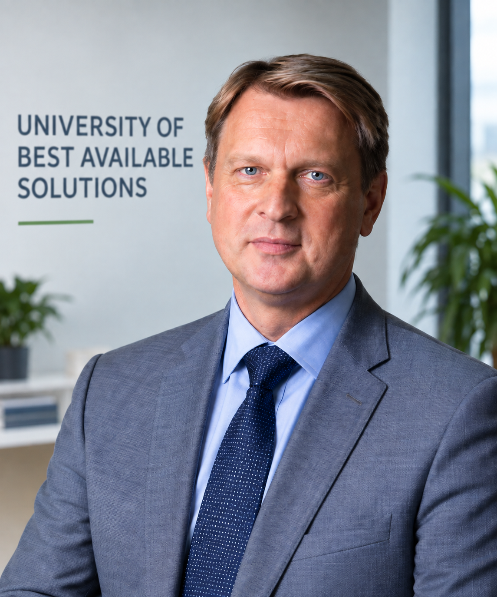
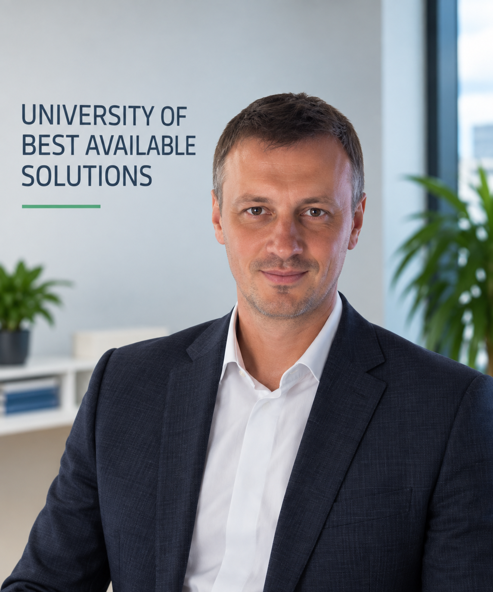
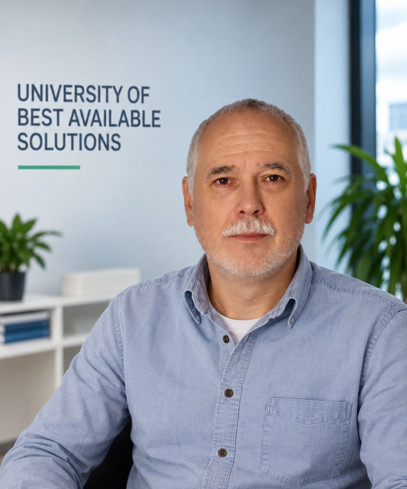
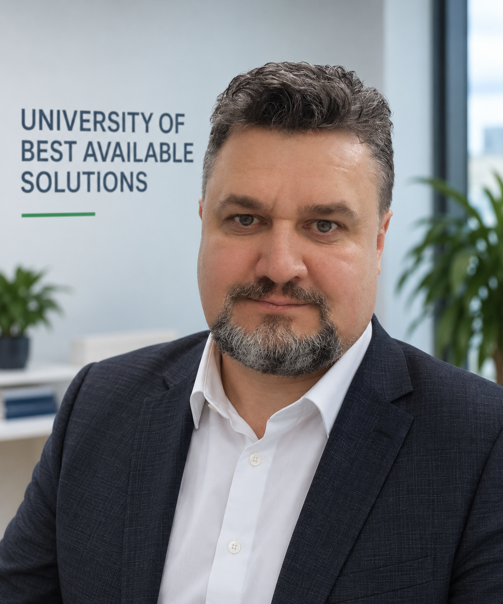
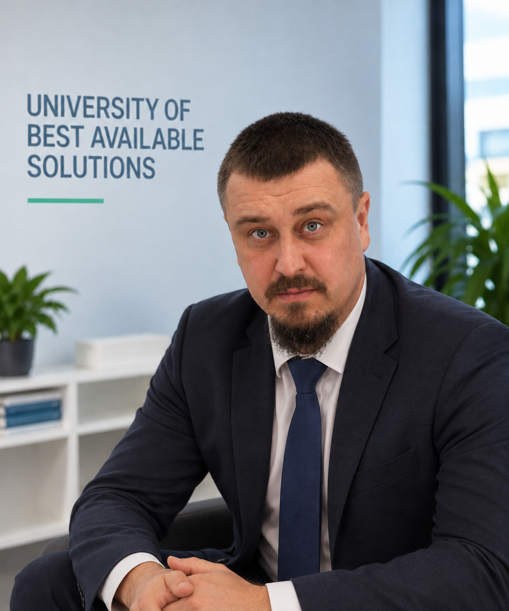

Gdańsk · contaminated site · 2009
Baltic Arena: складне очищення території перед EURO 2012.
Історичний кейс поводження з похованими небезпечними відходами на території будівництва стадіону в Гданську.
UBAS об’єднує експертів у сфері екології, remediation, GIS, сталого розвитку та європейського регулювання.
Працюємо на перетині екологічної інженерії, права ЄС, цифрових даних, сталого розвитку та комунікації з громадами.
Оцінка забруднення, технологічні рішення, відновлення ґрунтів і контроль залишкового ризику.
Системи поводження з відходами, landfill management, сортування та ресурсоефективність.
Геопросторовий аналіз, EO/GNSS, цифрове картування та підтримка рішень.
BAT/BREF, екологічна політика ЄС, LCA, сталість і проєктна архітектура.
Напрями, де UBAS формує партнерства, технічні концепції та суспільну взаємодію навколо конкретних екологічних задач.
Концепція відновлення забруднених територій через site-specific remediation, біотехнології, GIS/EO, оцінку ризиків та демонстраційні ділянки.
Екологічне відновлення та рішення для територій, пов’язаних із водними системами і транскордонною взаємодією.
Поширення практик найкращих доступних рішень і наближення екологічного управління до підходів ЄС.
Міждисциплінарна команда з компетенціями у праві, інженерії, remediation, GIS, сталому розвитку, цифровій інфраструктурі та міжнародних партнерствах.







